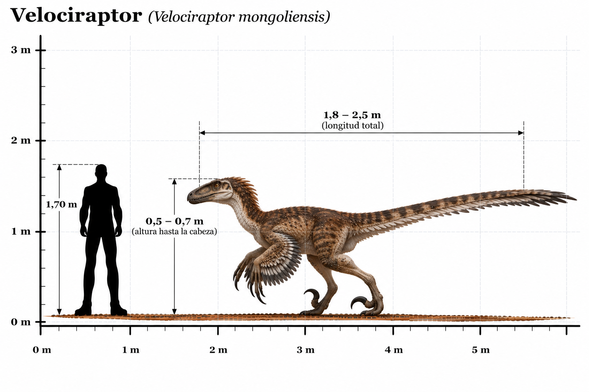

Velociraptor mongoliensis

El Velociraptor mongoliensis fue un dinosaurio terópodo carnívoro que habitó Asia durante el Cretácico tardío, hace aproximadamente entre 75 y 71 millones de años. Sus restos fósiles fueron descubiertos en Mongolia, especialmente en los depósitos del desierto de Gobi. Su nombre significa "ladrón veloz", en referencia a su constitución ligera y sus extremidades adaptadas para desplazarse sobre dos patas. A diferencia de su representación en algunas películas, el Velociraptor era un dinosaurio relativamente pequeño, con una longitud aproximada de dos metros, incluyendo la cola. Poseía un cráneo alargado con numerosos dientes afilados, brazos desarrollados y una cola rígida que contribuía a mantener el equilibrio. Su característica más distintiva era una gran garra curvada situada en el segundo dedo de cada pie, que mantenía elevada durante el desplazamiento. Esta garra probablemente le permitía sujetar y controlar a sus presas durante la caza. Los fósiles también han demostrado que el Velociraptor poseía plumas. Se han identificado marcas de inserción de plumas en los huesos de sus antebrazos. Uno de los descubrimientos más famosos es el fósil conocido como "Dinosaurios luchadores", que conserva un Velociraptor enfrentado a un Protoceratops. Este hallazgo constituye una evidencia excepcional del comportamiento de los dinosaurios durante el Cretácico.
- Grupo: Terópodo (dromeosáurido).
- Familia: Dromaeosauridae (dromeosáuridos).
- Período: Cretácico tardío (hace aproximadamente 75–71 millones de años).
- Alimentación: Carnívoro.
- Longitud: Aproximadamente 1,8–2 metros.
- Altura: Aproximadamente 0,5 metros hasta la cadera.
- Localización: Asia (actual Mongolia y norte de China).
